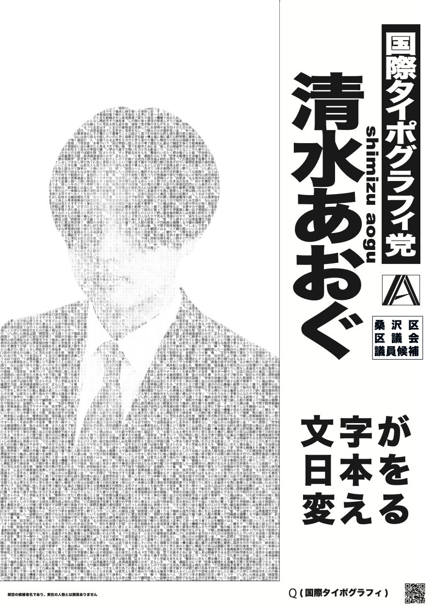
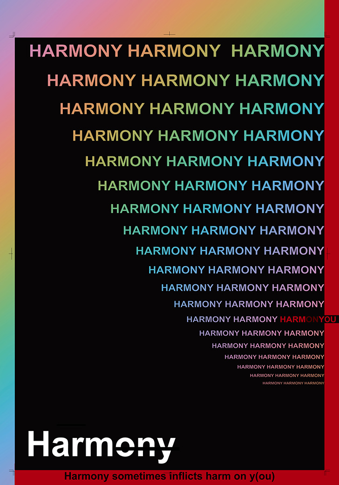
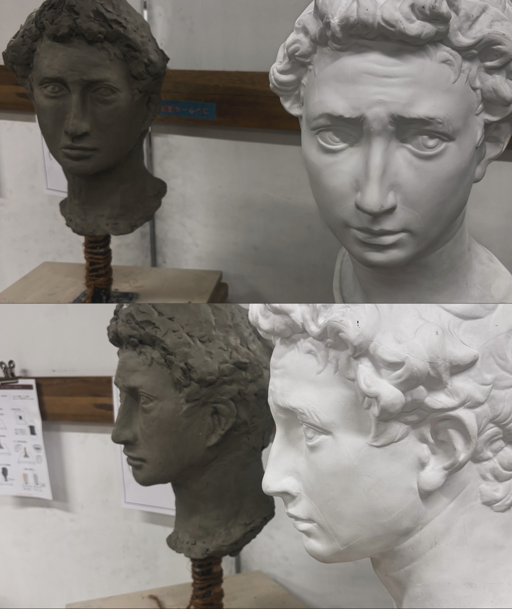
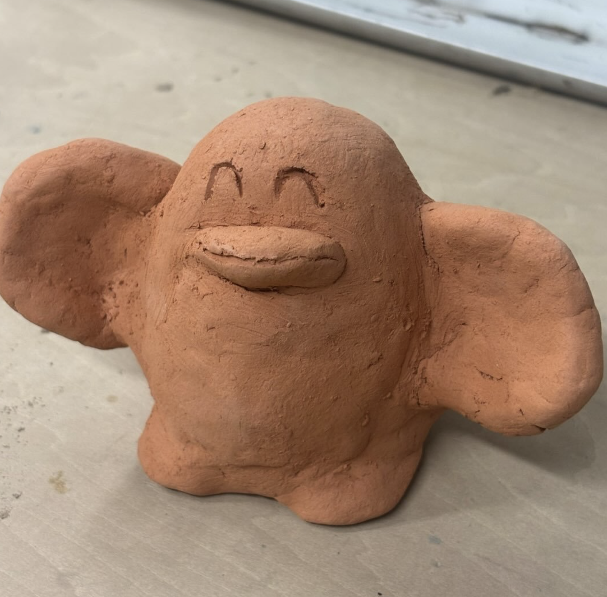

Selected Work 12026.07

選挙ポスター
国際タイポグラフィー様式は、客観的な情報伝達を追求していた。もし、それが政党としてあったらどのような選挙ポスターになるのかを想像して作成した。
Photoshop, Illustrator, claude(文章生成)02 / 08
Selected Work
Created at
Selected Works / 06
AOGU
ポートフォリオ
Tool
←
左スワイプしてめくる
Selected Work 22026.04

けん玉による自画像
学校での最初の課題。これから羽ばたいていきたいという理想の私。どこからか覚めた目で見つめる現実の自分。
Kendama, Paper Clay03 / 08
Selected Work 32026.07

Harmony
Harmonyを分割すれば、Harm on y(ou)（あなたへの危害）と読むこともできる。現実世界においても調和が保たれる一方、その裏では都合の悪い危害が隠蔽されるという構造に着目した。ポスター内にあるトンボに沿って裁断すると、不都合なメッセージが切り落とされる。裁断という印刷工程を利用して、社会のあり方を批評した。
Illustrator04 / 08
Selected Work 42026.06

哲学探究のブックデザイン
ウィトゲンシュタインの哲学探究は、緻密に組み立てられた建築のような書物です。哲学の深淵が覗ける、そのようなデザインにしました。現在、手製本による中身の作成を行なっています。
Illustrator05 / 08
Selected Work 52026.03

Moliere: 鉛筆デッサン
Pencil06 / 08
Selected Work 62026.03

Giorgio: 粘土模刻
Clay07 / 08
Profile
2026

AOGU
桑沢デザイン研究所 夜間部 VD1年
AI時代において、新しい価値を創出することに注力したいと思い、デザインを学んでいます。以前は哲学、データサイエンス、コンピュータサイエンスを学んでいました。
Terracotta
08 / 08